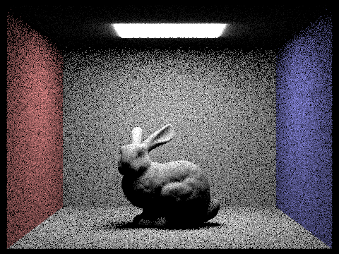
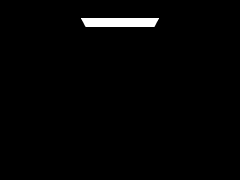

In this homework, we went through a long journey of implementing a path tracer.
Starting from the basics of ray generation, than we implemented several intersections with different primitives, for example triangles and spheres.
This part is relatively easy, but it is the foundation of the whole project, I encountered several bugs in the following parts due to my error
implementation of the sphere intersection.
After that, we implemented a BVH tree to speed up the intersection process. This part is really interesting and give us a sense why we need a binary
BVH tree and how to build it recursively.
Then we comes to the direct illumination part with two methods, sample from a hemisphere and the other is sampled towards the light source.
They provide my different ideas of how to calculate the direct illumination.
The next part is the global illumination, which is the most interesting part in this project. We implemented it with a recursive function,
the key part is to sample the very next ray until the end and sum up if isAccumulate is true.
On the other hand, if isAccumulate is false, we replace "+=" by "=", which is very neat.
In the end, we implemented the adaptive sampling, which is a very interesting part. We need to calculate the variance and mean and than calcluate
an "I", to compare with the threshold. This can speed up the rendering process when number of samples is very large.
Overall, This project is hard, yet very interesting and I learned a lot from it.
Note I implement this homework with the help of Code pilot in the situation such as naming variables in a more reasonable
way and some algorithm done in previous homeworks(e.g. determine if a point is inside a triangle).
Ray generation:
The first step I do is to calculate the correlationship between the "recentered" pixel and the camera coordinate.
This involves the calculation of the correlationship between the pixel and the original coordinate,
then I mapped it to the new coordinate system, which is the camera coordinate system.
After that, we use the matrix to transform the camera coordinate to the world coordinate, which is the same as the original coordinate.
Then we normalize the vector to get the direction of the ray and construct the ray with the origin and the direction.
Of course, we use nclip and fclip to decide the visible range of the camera.
Primitive intersection:
The key step of primitive intersection is to calculate the parameter t when the ray intersects with the primitive IN MATH.
Then we use min_t and max_t to decide if there is actually an intersection.
This algorithm actually is just using barycentric coordinates to calculate the intersection.
After we calculate the barycentric coordinates, we can decide if the point is inside the triangle. By check if the parameters
alpha beta and gamma (here b1, b2 ...) are all greater than 0 and less than 1.
b1, b2 in my code are actually barycentric weights, which is the weight of the point in the triangle. I have
implemented this algorithm in homework1, so the ideas are the same.
One of the great thing with this is when I want to calcalate isect->n, I can just simply use a weighted sum as the result.
|
|
|
|
|
|
The first step of my construction is initialize the biggest bbox for the entire scene.
After that, I geneate many bbox for each primitive.
Now if the number of primitives is less than the threshold of a leaf node, we return the node.
Then we deter mean which axis of this bbox is the longest, so that it will be the axis we use to split the bbox.
Then we sort the primitives by the axis we just calculated and split the bbox into two parts. The reason why
we need to sort the primitives is that we need to split the bbox into two parts, and we need to make sure the
primitives are in the order along the axis that we want to split. So that we can split the bbox into two parts.
In the end we recursively call the function itself to build the left subtree and the right subtree.
|
|
|
We can see with BVH, the rendering time is much shorter than without BVH from the following pictures.
| Files | Without BVH (s) | With BVH (s) |
|---|---|---|
| Cow | 14.7777 | 0.2474 |
| CBlucy | 669.7677 | 0.2224 |
Uniform Hemisphere Sampling:
1. We first get a sample direction vector from the hemisphere, then we have to transform this vector
from the hemisphere in objective space to the world space. Then use this vector as the direction vactor of ray.
2. Then we determine if the new ray intersects with anything, in the process, we use the reflection equation, and also,
we use the get_emission functionn to ensure we only enlight the area if the new ray hits the light source.
3. Repeat the process for num_samples times and get the normalized sum.
Importance lighting Sampling:
1. We first get a sample direction vector from the light perspective, the ray is already in the world space.
Use this vector after normalization as the direction vactor of ray.
2. Then we determine if the new ray intersects with anything else, if not, that means the light is
hitting the light source, so we enlight the area.
Note this time we set the min_t to distToLight - EPS_F instead of EPS_F.
3. Repeat the process for num_samples times and get the normalized sum IF the scene light is not delta light.
If it is delta light, we set num_samples to 1.
| Uniform Hemisphere Sampling | Light Sampling |
|---|---|
|

|
|
|
|
|
The noise level of the light sampling is much lower than the uniform hemisphere sampling.
The lighting sampling is sampling from the light source's perspective, we enlight the area iff the light source can hit.
So the noise level is relatively low and the efficiency is relatively high.
On the other hand, the uniform hemisphere sampling is sampling from the objects' perspective,
we enlight the area depending on the get_emission function, the function returns black if the ray's intersection
is not the light source, and the noise level is relatively high and the efficiency is relatively low.
|
|
|
|
|
|
As you can see, the noise level decreases as the number of light rays increases. Because more areas are enlightened.
The noise level of the light sampling is much lower than the uniform hemisphere sampling.
The lighting sampling is sampling from the light source's perspective, we enlight the area iff the light source can hit.
So the noise level is relatively low and the efficiency is relatively high.
On the other hand, the uniform hemisphere sampling is sampling from the objects' perspective,
we enlight the area depending on the get_emission function, the function returns black if the ray's intersection
is not the light source, and the noise level is relatively high and the efficiency is relatively low.
This part is mainly about the at_least_one_bounce_radiance function.
In this part, I implemented the indirect lighting function by calling the previous function
one_bounce_rafiance at first, then I check the isAccumBounces flag to determine whether I should use "+=" of "="
when I recursively call the function itself if the light is hiting other objects except the light source, and if the terminate condition is not yet satisfied.
On the other hand, I use depth cutting method to decide when should I stop with 2 methods.
I first set the ray depth to max_ray_depth, then I stop when the current ray depth is less than 1.
Also, I implemented another method with Russian Roulette, which is more reasonable to the real world.
I set the termination probability to 0.3, and cpdf to 1-0.3=0.7.
Other things to mention is about is when the ray does not hit anything, I should return the accumulation sum currently or just black, depending on the flag isAccumBounces.
|
|
|
|
|
|
As shown in the above picture, the direct illumination picture is bright in everywhere the light from the light source can reach, and the indirect illumination picture is darker in these areas
|

|
|
|
|
|
|
|
As the max_ray_depth increases, the dark side which preious can not direct acheived by the light source will be bright.
And as the max_ray_depth increases, more and more pixels will be lighted up.
On the other hand, more and more pixels will be lighted up as the max_ray_depth increases, because we use
the accumulation sum.
Note that as the max_ray_depth increases, the difference might be not very obvious, but the difference is there.
And you can see from the intersection edge of the cell and wall for example.
|
|
|
|
|
|
|
|
|
|
|
As you can see from the above pictures, the noise level decreases as the number of samples per pixel increases.
Adaptive sampling is a method for large numbers of samples.
We need to calculate the variance and mean and than calcluate
an "I", to compare with the threshold. This is becourse we want to achieve a sample number that
we can be confident to say it'll be coverage enough.
My implementation begin with access the illumination of the pixel, tha I use the resource on our Website
to calcalate the variance and mean, then I calculate the "I" and compare it with the threshold.
If the I/mu is less than the threshold, we will stop the for loop instead of sammpling for the whole
number of samples.
One thing to mention is instead of average the color sum by num_samples, we have to average the sum by n this time.
|
|
|
|
|
|